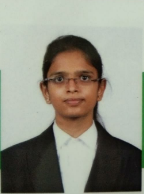

+91 7989451904
H-No: 77/188/7G, KallurEstate, Kurnool, Andhra Pradesh.
Data Science and Artificial Intelligence
Avula Jhansy is currently pursuing a B-Tech degree in Data Science and Artificial Intelligence at Woxsen University, Hyderabad. She is highly passionate about coding and takes on assignments with a strong sense of independence and dedication. A beginner who explores a wide range of topics, currently into data analysis and machine learning
Woxsen University | Hyderabad, India
2021-2025|B.Tech - Data Science and Artificial Intelligence
Grade- 3.58 CGPA
Narayana Junior College | Andhra Pradesh, India
2019-2021 | Intermediate - MPC
Grade- 9.8 GPA
Ravindra Vidya Nikethan School | AndhraPradesh, India
2019 |10th grade
Grade- 9.8 GPA
February 7, 2023 - July 21, 2023
Appstek Corp | Hitech city, Hyderabad
Research Intern
December 9, 2023 - January 8, 2024
Exposys Data Labs, Bengaluru
DataScience InternDiabetes Predictor
A user-friendly website has been built with HTML and CSS. It's linked to a Python program with the Django framework that uses machine learning to help users find out if they might have diabetes. Just enter some basic info like your age and obesity, and it gives you a quick answer.
GitHub: https://github.com/AvulaJhansy/DiabetesPredictorWeather Prediction Model
A user-friendly website has been created with HTML and CSS, seamlessly integrated with a Python program and machine learning. The uniqueness of the model stands out because it utilizes the Open Weather API to collect real-time weather data based on user location. The fetched data acts as input to the model to generate precise and accurate weather forecasts. The model is thus deployed using Streamlit
Deployed link: https://weatherprediction-5u6tmw49in6tdvtlwxjcgg.streamlit.app/